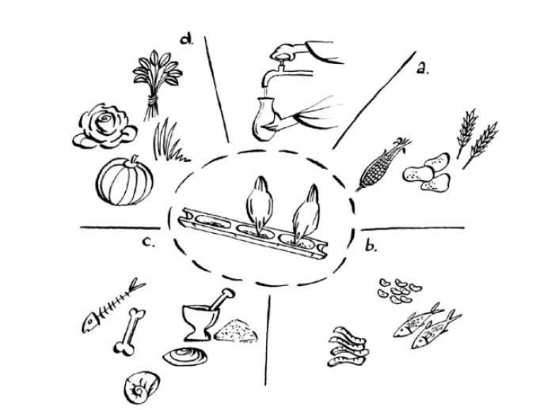
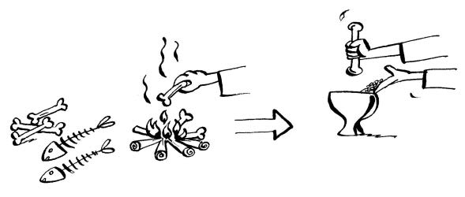
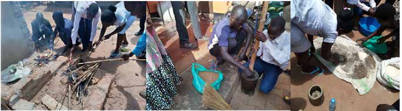
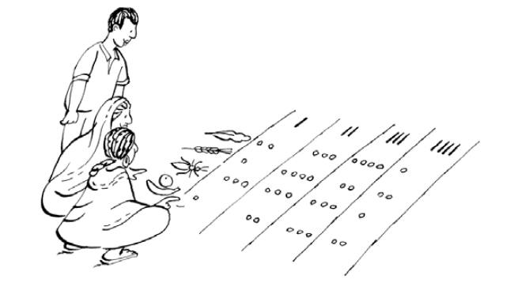
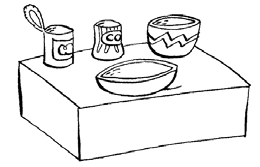
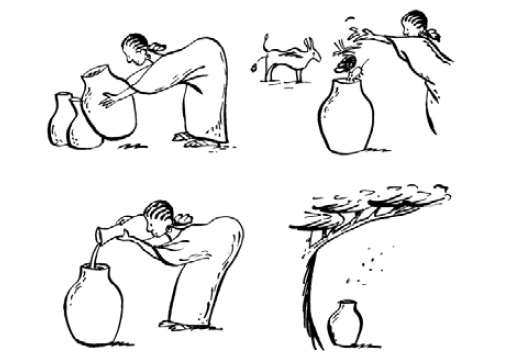
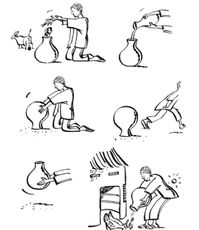

តម្លៃអាហារូបត្ថម្ភនៃចំណី
ការណែនាំអំពីចំណី និងការផ្តល់ចំណីនឹងមានភាពខុសប្លែកគ្នាសម្រាប់ប្រព័ន្ធជួរសេរី ការកែលម្អប្រព័ន្ធជួរសេរី ឬប្រព័ន្ធបង្ខាំងខ្នាតតូចនៃការផលិតបសុបក្សី ជាមូលដ្ឋានដោយសារតែស្ថានភាពសេដ្ឋកិច្ចខុសៗគ្នា។
ខាងក្រោមនេះ យើងនឹងផ្តោតតែលើប្រព័ន្ធជួរទំនេរដែលប្រសើរឡើង ហើយពិភាក្សាអំពីសារៈសំខាន់នៃតម្រូវការចំណី ប្រភេទនៃមតិព័ត៌មាន ការលាយចំណី និងតម្លៃចំណី។
ហេតុអ្វីត្រូវផ្តល់ចំណីបន្ថែម?
- មាន់ដូចជាសត្វមានជីវិត បរិភោគដើម្បីឱ្យមានជីវិត លូតលាស់ ហើយបន្ទាប់មកបង្កើត (ពង/សាច់) ឬបន្តពូជ (មិត្តរួមនិងបង្កើតកូនចៅ)។
- ការចិញ្ចឹមបន្ថែមគឺចាំបាច់ប្រសិនបើអ្នកចង់បង្កើនការផលិតសាច់ និងស៊ុតពីបសុបក្សីក្នុងស្រុក និងពូជដែលប្រសើរឡើង។
- សូម្បីតែហ្វូងសត្វតូចៗនៅទីបំផុតនឹងស្រេកឃ្លានក្នុងអំឡុងពេលជាក់លាក់នៃឆ្នាំ ប្រសិនបើពួកគេត្រូវបានផ្តល់អាហារសល់តែអាហារដែលនៅសល់ និងចំណីដែលពួកគេរកបានដោយការរើសអេតចាយ។
- កង្វះចំណី ឬទឹកនឹងកាត់បន្ថយភាពធន់របស់បក្សីចំពោះជំងឺ និងប៉ារ៉ាស៊ីត ហើយនឹងបង្កើនការស្លាប់ហ្វូងសត្វជាបន្តបន្ទាប់។
តើត្រូវចិញ្ចឹមអ្វី?
- ជាទូទៅ បសុបក្សី ដូចជាសត្វដទៃទៀតដែរ ត្រូវការចំណីដែលមានថាមពល និងប្រូតេអ៊ីន ក៏ដូចជាវីតាមីន និងសារធាតុរ៉ែ។
- តម្រូវការចំណីនឹងប្រែប្រួលអាស្រ័យលើអាយុ និងស្ថានភាព (កូនមាន់ អ្នកដាំដុះ ស្រទាប់ពងមាន់ មេមាន់) របស់បក្សី។
- មធ្យោបាយថោកបំផុតដើម្បីបំពេញបន្ថែមរបបអាហាររបស់បសុបក្សីរបស់អ្នក គឺត្រូវប្រើប្រាស់ធនធានក្នុងស្រុក។
- ទោះជាយ៉ាងណាក៏ដោយ វីតាមីន និងសារធាតុចិញ្ចឹមជាច្រើនត្រូវបានបំផ្លាញ ប្រសិនបើរក្សាទុកយូរពេក ឬស្ថិតក្រោមលក្ខខណ្ឌអំណោយផល ឧទាហរណ៍ សំណើមខ្ពស់ និងកំដៅ។
ប្រភេទនៃមតិព័ត៌មាន
សារធាតុចិញ្ចឹមដែលត្រូវតែមាននៅក្នុងចំណីគឺ * ទឹក * កាបូអ៊ីដ្រាត * ខ្លាញ់ និងប្រេង * ប្រូតេអ៊ីន * វីតាមីន * សារធាតុរ៉ែ
នៅពេលដែលសារធាតុចិញ្ចឹមទាំងអស់នេះត្រូវបានផ្តល់នៅក្នុងចំណី នោះវាជារបបអាហារដែលមានតុល្យភាព។ អាស្រ័យលើប្រភេទចំណី វានឹងមានថាមពល និងប្រូតេអ៊ីនច្រើន ឬតិច ក៏ដូចជាវីតាមីន និងសារធាតុរ៉ែផងដែរ។

ប្រភេទចំណីចែកចេញជាប្រភពនៃសារធាតុចិញ្ចឹម៖ a = ថាមពល b = ប្រូតេអ៊ីន c = សារធាតុរ៉ែ d = វីតាមីន។ ទឹកគួរតែមានជានិច្ច
ចំណីថាមពល
- ចំណីថាមពលគឺជាចំណីដ៏សំខាន់បំផុតដើម្បីរក្សាមុខងាររាងកាយ និងធ្វើឱ្យមាន់សកម្ម។ ជាធម្មតា យ៉ាងហោចណាស់ ¾ នៃរបបអាហារបសុបក្សីត្រូវបានបង្កើតឡើងពីចំណីថាមពល។
- ថាមពលនៅក្នុងចំណីត្រូវបានផ្គត់ផ្គង់ជាចម្បងជាកាបូអ៊ីដ្រាត ("ស្ករ") ប៉ុន្តែជួនកាលខ្លាញ់ និងប្រេងផងដែរ។
- គ្រាប់ធញ្ញជាតិ (គ្រាប់ធញ្ញជាតិ) មើមឫស គឺជាចំណីថាមពលដ៏សំខាន់បំផុត។
- គ្រាប់ធញ្ញជាតិ និងផលិតផលកាកសំណល់របស់ពួកគេ បានរកឃើញនៅភាគខាងជើង និងខាងលិចតំបន់នីលនៃ
អ៊ូហ្គង់ដា រួមមាន ពោត កន្ទក់ ពោត អង្ករ កន្ទក់ មី កាកសំណល់ម៉ាល់វ៉ា កាកសំណល់ស្រូវសាលី ស្រូវសាលី និងផ្ទះបាយ/អ្នកផលិតស្រាដែលបដិសេធមិនទទួលយកអ្វីទាំងនេះ។
- មើមឬស រួមមាន ដំឡូងមី ដំឡូងជ្វា មើម ចំបើង និងចេក។
- ឫស និងមើមត្រូវត្រាំក្នុងទឹករយៈពេល ៦០ នាទី ឬចម្អិនមុនពេលស្ងួត ដើម្បីកម្ចាត់សារធាតុគ្រោះថ្នាក់។ សមាមាត្រនៅក្នុងរបបអាហារគួរតែត្រូវបានរក្សាទុកនៅក្រោម 1/10 ។
ប្រូតេអ៊ីន
- ប្រូតេអ៊ីនគឺជាអាហារដែលបង្កើតរាងកាយ។ ពួកគេត្រូវការសម្រាប់ការលូតលាស់ និងរក្សាស្ថានភាពសុខភាពល្អ។
- ជាធម្មតា របបអាហារគួរតែមានប្រហែល 1/5 នៃចំណីចម្រុះសរុបដែលធ្វើពីចំណីដែលសំបូរទៅដោយប្រូតេអ៊ីន ព្រោះពួកវាមានតម្លៃថ្លៃណាស់។
- ការលូតលាស់របស់បក្សីដូចសត្វដទៃទៀតគឺលឿននៅពេលវានៅក្មេង ដូច្នេះហើយ ប្រូតេអ៊ីនដែលមានគុណភាពល្អគួរត្រូវបានផ្គត់ផ្គង់សម្រាប់កូនមាន់លូតលាស់លឿន។
- កម្រិតប្រូតេអ៊ីនខ្ពស់គឺត្រូវការដោយបក្សីដែលពងព្រោះសត្វបក្សីបញ្ចេញប្រូតេអ៊ីនច្រើនក្នុងស៊ុត។
- ប្រូតេអ៊ីនអាចមកពីប្រភពសត្វ ឬរុក្ខជាតិ។
- ប្រភពប្រូតេអ៊ីនរបស់រុក្ខជាតិរួមមានគ្រាប់ពូជ leguminous ដូចជា cowpeas សណ្តែក និងនំប្រេងពីឧទាហរណ៍ គ្រាប់ដី គ្រាប់កប្បាស ខឺណែលដូង និងដូង។
- សារធាតុដែលបង្កគ្រោះថ្នាក់មាននៅក្នុងរុក្ខជាតិដែលសម្បូរទៅដោយប្រូតេអ៊ីន ឧ. សណ្តែក។
- ប្រភពប្រូតេអ៊ីនដែលមានមូលដ្ឋានលើរុក្ខជាតិទាំងអស់ត្រូវតែត្រូវបានអាំង ឬចម្អិនដូចមនុស្សមុននឹងកិន និងលាយ។ កំដៅយកសារធាតុអាក្រក់ដែលការពារការរំលាយអាហារនៃ legumes ទាំងនោះ។
- ឧទាហរណ៍នៃចំណីក្នុងស្រុកសម្បូរប្រូតេអ៊ីនពីប្រភពសត្វគឺ៖ សត្វកន្ធាយដង្កូវទឹក សត្វល្អិត ដង្កូវដី សំណល់សាច់ សំណល់ត្រី (ដូចជា Mukene/Nkenje កាកសំណល់កែច្នៃត្រី) សាច់ត្រី សាច់ឆ្អឹង អាហារឈាម អាហារស្លាប។ ត្រី និងផលិតផលកាកសំណល់របស់ពួកគេដូចជា offals គឺងាយស្រួលបំផុតក្នុងការទទួលបានសម្រាប់សាច់មាន់នៅក្នុងតំបន់ជុំវិញសហគមន៍នេសាទ។
- សត្វល្អិតបានលេចឡើងជាប្រភពប្រូតេអ៊ីនដ៏ល្អជាមួយនឹងសក្តានុពលនៃការចិញ្ចឹមមាន់ក្នុងបរិមាណសមហេតុផល។ នៅរដូវវស្សា សត្វមាន់នៅក្នុងប្រព័ន្ធរើសអេតចាយមានលទ្ធភាពចូលទៅដល់សត្វល្អិតនៅពេលវាដើរជុំវិញ។ នៅពេលយប់ការផ្តល់ពន្លឺនៅក្នុងផ្ទះមាន់អាចទាក់ទាញសត្វល្អិតដូចជាស្រមោចពណ៌សហើយរុយចូលទៅក្នុងទ្រុងមាន់។ ពន្លឺត្រូវបានព្យួរយ៉ាងល្អបំផុតនៅពីលើថាសទឹកដើម្បីចាប់សត្វល្អិត។ ប្រភពផ្សេងទៀតនៃសត្វល្អិតដែលអាចចិញ្ចឹមបានរួមមានដង្កូវនាង និងដង្កូវរុយ (ដង្កូវនាង)។
សារធាតុរ៉ែ
- សារធាតុរ៉ែមានសារៈសំខាន់សម្រាប់ការបង្កើតឆ្អឹង ការបង្កើតសំបកស៊ុត និងស្ថានភាពសុខភាពល្អ។
- សារធាតុរ៉ែសំខាន់បំផុតគឺកាល់ស្យូម និងផូស្វ័រ។ ដើម្បីបង្កើតសំបកដ៏រឹងមាំសម្រាប់ពងរបស់វា មេមាន់ត្រូវការលទ្ធភាពទទួលបានកាល់ស្យូមដោយឥតគិតថ្លៃ (ថ្មកំបោរ ឬសំបកកំទេច)។ បក្សីពេញវ័យជាធម្មតាអាចរក្សាតុល្យភាពការទទួលទានរបស់វាទៅតាមតម្រូវការរបស់វា។
- ឧទាហរណ៍នៃប្រភពនៃសារធាតុរ៉ែគឺ៖ អាហារឆ្អឹង សំបកអយស្ទ័រ សំបកខ្យង អំបិលធម្មតា ម្សៅកំបោរ និងសំបកស៊ុតដុត។
- ការប្រើអាហារឆ្អឹង ឬសំបកស៊ុត គឺជាមធ្យោបាយដ៏ល្អក្នុងការរក្សាតុល្យភាពកម្រិតកាល់ស្យូម និងផូស្វ័រ។ សំបកស៊ុតគួរត្រូវដុត ឬចម្អិនជានិច្ច មុននឹងប្រើឡើងវិញក្នុងរបបអាហារ ដើម្បីកម្ចាត់មេរោគផ្សេងៗ។
 
វីតាមីន
- វីតាមីនគឺជាសារធាតុចិញ្ចឹមដែលត្រូវការដោយសត្វក្នុងបរិមាណតិចតួច។
- វីតាមីន A, B2, និង D3 ត្រូវបានចាត់ទុកថាមានសារៈសំខាន់ខ្លាំងណាស់ព្រោះបញ្ហាជាច្រើនកើតឡើងនៅពេលដែលសត្វស្លាបខ្វះវីតាមីនទាំងនេះ។
- ពន្លឺព្រះអាទិត្យ និងស្មៅបៃតង ឬចំណីពណ៌បៃតងជាធម្មតាផ្តល់វីតាមីន A និង D ចំណែកវីតាមីន B អាចមកពីលាមកគោស្រស់។
- វីតាមីន B ក៏អាចត្រូវបានបន្ថែមដោយការផ្តល់ឱ្យឧទាហរណ៍ថ្នាំគ្រាប់ Riboflavin ។ វីតាមីនបន្ថែមអាចត្រូវបានផ្តល់ឱ្យក្នុងបរិមាណតិចតួចបំផុត និងទិញតាមរយៈហាងលក់ថ្នាំ ឬអ្នកលក់ចំណី ប៉ុន្តែជាធម្មតាវាមិនចាំបាច់សម្រាប់ការរើសសត្វបក្សីនោះទេ។
- សត្វស្លាបដែលត្រូវបានបង្ខាំងតែងតែត្រូវការវីតាមីនបន្ថែមដែលលាយចូលទៅក្នុងចំណីរបស់វា។ នៅក្នុងសត្វស្លាបដែលមានកំពស់ខ្ពស់ ការបន្ថែមវីតាមីនដែលផលិតដោយរោងចក្រគឺជាការចាំបាច់។ កង្វះវីតាមីនគឺជារឿងធម្មតានៅក្នុងបក្សីវ័យក្មេង ដូច្នេះចំណីរបស់វាកំឡុងពេលបង្កាត់ពូជគួរតែត្រូវបានបំពេញបន្ថែម។
ទឹក។
- ប្រហែល 60% នៃរាងកាយរបស់បក្សីនិង 65% នៃស៊ុតត្រូវបានធ្វើពីទឹក។
- ទឹកស្អាតត្រូវតែផ្តល់ដល់មាន់គ្រប់ពេល!!!
- ជារឿយៗ មាន់នៅតាមភូមិ មិនត្រូវបានផ្តល់ទឹកជាពិសេសសម្រាប់ពួកវាទេ។ ពួកគេផឹកពីស្រះតូចៗ ឬទឹកកខ្វក់បន្ទាប់ពីបោកគក់ឧបករណ៍ ឬសម្លៀកបំពាក់។ នេះអាចនាំឱ្យមានការរីករាលដាលនៃជំងឺដូចជាជំងឺ Newcastle ឬប៉ារ៉ាស៊ីត។
- ការទទួលទានទឹកកើនឡើងជាមួយនឹងការកើនឡើងនៃសីតុណ្ហភាពបរិស្ថាន។ កម្រិតខ្ពស់នៃអំបិលក្នុងរបបអាហារក៏បង្កើនការទទួលទានទឹកផងដែរ។
- កង្វះទឹកអាចពន្យារការលូតលាស់យ៉ាងធ្ងន់ធ្ងរ និងកាត់បន្ថយការផលិតស៊ុត ជាពិសេសនៅតំបន់ក្តៅ ដូចជាតំបន់ភាគខាងជើងនៃប្រទេសអ៊ូហ្គង់ដា។ កង្វះទឹកអាចបណ្តាលឱ្យមាន់ស្លាប់ក្នុងមួយថ្ងៃឬពីរថ្ងៃនៅក្នុងបក្សីដែលបង្ខាំង។
ការបង្កើតប្រតិទិនចំណីតាមរដូវ
- ចំណីគឺខ្វះខាតក្នុងរដូវខ្លះនៃឆ្នាំ។ សត្វមាន់ប្រកួតប្រជែងជាមួយមនុស្សសម្រាប់អាហារ។
- វាមានសារៈសំខាន់ណាស់ក្នុងការរៀបចំផែនការសម្រាប់រដូវខ្វះខាត និងរក្សាទុកចំណីនៅពេលដែលវាសម្បូរ។
- យើងគួររៀបចំផែនការកាត់បន្ថយចំនួនមាន់ក្នុងរដូវខ្វះខាតផងដែរ។ ជាឧទាហរណ៍ យើងគួរជៀសវាងការចិញ្ចឹមកូនមាន់ក្នុងរដូវដែលមានការផ្គត់ផ្គង់ចំណីមានកំណត់។
- នេះអាចធ្វើទៅបានតាមរយៈការភ្ញាស់តាមកម្មវិធី ឬគ្រាន់តែលក់ ឬបរិភោគពង ប្រសិនបើការភ្ញាស់ទំនងជាស្ថិតក្នុងរដូវខ្វះខាត។
- ប្រហែលជាក្នុងកំឡុងខែខ្លះ វាអាចទៅរួចក្នុងការរក្សាមេមាន់ពីរបីក្បាល និងមាន់ជល់លើកម្រិតថែទាំ ដើម្បីចាប់ផ្តើមការផលិតមាន់នៅពេលដែលការផ្គត់ផ្គង់ចំណីកើនឡើង។
- ម៉្យាងវិញទៀត វាអាចទទួលបានផលចំណេញក្នុងការដាំដុះចំណីសម្រាប់មាន់ ប្រសិនបើពួកគេអាចចិញ្ចឹមនៅពេលនៃឆ្នាំនៅពេលដែលតម្លៃទីផ្សារខ្ពស់។
- ប្រតិទិនតាមរដូវគួរតែត្រូវបានគូរតាមវិធីចូលរួម រួមជាមួយនឹងអ្នកសម្របសម្រួល និងសិក្ខាកាម  ប្រតិទិនតាមរដូវ (ម៉ាទ្រីស) បង្ហាញពីប្រភេទនៃសារធាតុចិញ្ចឹមដែលមានក្នុងរដូវនីមួយៗ
តម្រូវការអាហារូបត្ថម្ភ និងការលាយចំណីនៅផ្ទះ
វិធីសាស្រ្តចិញ្ចឹម
តើត្រូវចិញ្ចឹមប៉ុន្មាន?
- ប្រសិនបើសត្វស្លាបកំពុងរើសអេតចាយ យើងបំពេញបន្ថែមរបបអាហាររបស់ពួកគេជាមួយនឹងចំណីសត្វប្រហែល 30-40 ក្រាម/ថ្ងៃ ចាប់ពីសប្តាហ៍ទី 4-6 និងបន្តទៅទៀត។
- ប្រសិនបើសត្វស្លាបពេញវ័យមិនដើររើសអេតចាយទេ ចូរផ្តល់ចំណីឱ្យវាយ៉ាងហោចណាស់ 70g (ប្រាំពីរស្លាបព្រាបាយ) ក្នុងមួយបក្សីក្នុងមួយថ្ងៃ។
| អាយុ, សប្តាហ៍ | បរិមាណដែលបានផ្តល់ឱ្យបក្សីនីមួយៗក្នុងមួយថ្ងៃ (g ទម្ងន់ស្ងួត) | បរិមាណដែលបរិភោគក្នុងមួយថ្ងៃក្នុងមួយបក្សី (d ទម្ងន់ស្ងួត) រួមទាំង។ ការរើសអេតចាយ |
|---|
| 1 សប្តាហ៍ | 10-15 ក្រាម។ | 12-15 ក្រាម។ |
| 2 សប្តាហ៍ | ៥-២០ ក្រាម។ | 15-20 ក្រាម។ |
| 3 សប្តាហ៍ | ២១-៣០ ក្រាម។ | ២១-៣៥ ក្រាម។ |
| 4-6 សប្តាហ៍ | 30-40 ក្រាម។ | ៣៥-៥០ ក្រាម។ |
| 8 សប្តាហ៍ | 30-40 ក្រាម។ | 55-60 ក្រាម។ |
| 16-27 សប្តាហ៍អ្នកដាំដុះ | 30-50 ក្រាម។ | ៦៥-៨០ ក្រាម។ |
| 28 សប្តាហ៍, មនុស្សពេញវ័យ | 30-50 ក្រាម។ | 100 ក្រាម។ |
ការពន្យល់នៃតារាង៖ កូនមាន់គួរតែត្រូវបានផ្តល់អាហារពេញមួយថ្ងៃក្នុងអត្រា 12 ក្រាមក្នុងមួយកូនមាន់ក្នុងមួយថ្ងៃក្នុងសប្តាហ៍ទី 1 បន្ទាប់មក 20 ក្រាមក្នុងសប្តាហ៍ទី 2 កើនឡើងយ៉ាងតិច 5 ក្រាមក្នុងមួយសប្តាហ៍រហូតដល់ 50 ក្រាមក្នុងមួយបក្សីក្នុងមួយថ្ងៃ។ នេះគឺសម្រាប់កូនមាន់ក្នុងការចិញ្ចឹមសិប្បនិម្មិត ដែលជាវិធីសាស្ត្រដែលបានណែនាំក្នុងការញាស់តាមកម្មវិធី។ កូនមាន់ត្រូវបានដោះលែងនៅអាយុ 2 ខែហើយបន្ទាប់មកបន្ថែមដូចជាបក្សីពេញវ័យ។
- ដើម្បីធានាបាននូវទិន្នផលស៊ុត និងសាច់មានស្ថេរភាព វាជាការប្រសើរក្នុងការផ្តល់ចំណីតិចតួចជាបន្ត ជាជាងផ្តល់បរិមាណច្រើនក្នុងរដូវប្រមូលផល ឬពិធីបុណ្យ ហើយគ្មានចំណីក្នុងរដូវគ្មានខ្លាញ់។
- ប្រសិនបើចំណីមានតម្លៃថ្លៃពេក អ្នកគួរតែពិចារណាកាត់បន្ថយទំហំហ្វូងរបស់អ្នក ជាជាងកាត់បន្ថយបរិមាណចំណីដែលផ្តល់ឱ្យបក្សីនីមួយៗ។
ការលាយចំណី (ប្រមូលផ្តុំ) សម្រាប់បក្សីពេញវ័យ
- នៅក្នុងបក្សីដែលមិនមានជួរ ចំណីផ្តោតអារម្មណ៍ត្រូវបានប្រើសម្រាប់ការផ្តល់អាហារដល់កូនមាន់ និងបន្ថែមមេមាន់ពេញវ័យដែលរើសអេតចាយជាអាហារ។
- ការបង្កើត និងលាយចំណីសត្វបក្សីអាចផ្អែកលើការសន្មត់សាមញ្ញអំពីតម្រូវការអាហារូបត្ថម្ភរបស់បក្សី និងខ្លឹមសារនៃចំណី។
- គ្រឿងផ្សំដែលមានក្នុងមូលដ្ឋានគួរតែត្រូវបានស្ងួតហួតហែងនៅក្នុងម្លប់ (ព្រះអាទិត្យអាចបំផ្លាញវីតាមីនសំខាន់ៗ) ហើយកិននៅក្នុងបាយអមុនពេលលាយ។
- ចំណីល្អត្រូវតែមានចំណីថាមពល ប្រូតេអ៊ីន វីតាមីន និងសារធាតុរ៉ែ។ ទាំងអស់នេះត្រូវតែមានតុល្យភាព។
- ប្រភពថាមពល និងប្រូតេអ៊ីនបង្កើតបានជាមតិភាគច្រើន ហើយដូច្នេះគេហៅថា មតិព័ត៌មានមូលដ្ឋាន ក្នុងការលាយចំណី។ សារធាតុរ៉ែ និងវីតាមីនត្រូវបានបន្ថែមក្នុងបរិមាណតិចតួច។
- តាមក្បួនមួយ សម្រាប់បក្សីពេញវ័យ សមាមាត្រនៃថាមពលទៅនឹងប្រូតេអ៊ីនរបបអាហារគួរតែមាន 2:1 មានន័យថា ប្រសិនបើអ្នកលាយចំណី 3 គីឡូក្រាម ពីរគីឡូក្រាមនឹងក្លាយជាប្រភពថាមពល (ដូចជាពោត កន្ទក់ ម្សៅដំឡូងមី។ល។) ហើយមួយគីឡូក្រាមនឹងក្លាយជាប្រភពប្រូតេអ៊ីនដូចជាត្រី។ អាហារបន្ថែមផ្សេងទៀត (វីតាមីន និងសារធាតុរ៉ែ) ត្រូវបានបន្ថែមដើម្បីធ្វើឱ្យអាហារពេញលេញ (របបអាហារមានតុល្យភាព)។ ប្រអប់ទី 1 ផ្តល់ឧទាហរណ៍អំពីរបៀបលាយចំណី 10 គីឡូក្រាម។
ឧទាហរណ៍នៃការគណនាការលាយចំណី
If we are to make a 10kg simple diet for supplementation in the ratio 2:1:0.5 for Energy: Protein: Vitamins and minerals, we can proceed as follows: Energy = 2/3.5 x10=5.7kg=6kg Proteins = 1/3.5 x10=2.9kg=3kg Minerals =0.5/3.5 x10=1.4kg=1kg Therefore, all your energy sources like maize, maize bran, millet should equal to 6kg. Also, protein sources like fish, soybean, beans, and others should equal to 3kg. Likewise, minerals and vitamin premixes should add up to 1 kg. We can, therefore, have a simple diet as in Table below. គ្រឿងផ្សំ If we are to make a 10kg simple diet for supplementation in the ratio 2:1:0.5 for Energy: Protein: Vitamins and minerals, we can proceed as follows: Energy = 2/3.5 x10=5.7kg=6kg Proteins = 1/3.5 x10=2.9kg=3kg Minerals =0.5/3.5 x10=1.4kg=1kg Therefore, all your energy sources like maize, maize bran, millet should equal to 6kg. Also, protein sources like fish, soybean, beans, and others should equal to 3kg. Likewise, minerals and vitamin premixes should add up to 1 kg. We can, therefore, have a simple diet as in Table below.
| បរិមាណ (គីឡូក្រាម) |
|---|
| ពោត | ២ |
| កន្ទក់ពោត | ៣ |
| កាកសំណល់មី / ស្រាបៀរ | ១ |
| ត្រី | ២ |
| សណ្តែកសៀង/សណ្តែក | ១ |
| សំបក (ឬកំបោរ) | ០.៥ |
| អំបិល | 0.25 |
| បញ្ចូល | 0.25 |
| សរុប | ១០ |
- នៅពេលដែលរូបមន្តត្រូវបានបង្កើតដូចក្នុងឧទាហរណ៍ក្នុងប្រអប់ទី 1 ខាងលើ នោះអ្នកលាយចំណីដោយលាយធាតុតូចៗជាមុនសិន មុននឹងបញ្ចូលវាបន្តិចម្តងៗទៅក្នុងមតិព័ត៌មានភាគច្រើន។ នេះនឹងធានាបាននូវការលាយបញ្ចូលគ្នានៃគ្រឿងផ្សំ។
- ធុងដែលអាចរកបានក្នុងមូលដ្ឋានដូចជា ធុងទឹកប៉េងប៉ោះ ឬប្រអប់ផ្គូផ្គង អាចត្រូវបានប្រើប្រាស់សម្រាប់ងាយស្រួលក្នុងការវាស់វែងគ្រឿងផ្សំផ្សេងៗគ្នា (រូបភាពទី 33)។ ក្រាម ឬភាគរយគួរតែត្រូវបានផ្ទេរទៅក្នុងបរិមាណក្នុងស្រុកសម្រាប់ការអនុវត្តជាក់ស្តែង។
 ធុងផ្សេងៗគ្នា (ដបប្លាស្ទិក កំប៉ុងសំណប៉ាហាំង ឬក្រឡឹង) មានបរិមាណខុសៗគ្នា
- ដំបូងយើងលាយ premix និងអំបិលដើម្បីទទួលបាន 0.5kg ។ បន្ទាប់មកយើងបន្ថែមវាទៅសំបកដើម្បីទទួលបាន 1 គីឡូក្រាម។ បន្ទាប់មកបន្ថែម 1 គីឡូក្រាមដែលបានបង្កើតឡើងទាំង 1 គីឡូក្រាមនៃត្រីឬម្សៅមី។ យើងបន្តដំណើរការរហូតដល់យើងលាយគ្រឿងផ្សំទាំងអស់ចូលទៅក្នុងចំណីតែមួយនៃពណ៌ឯកសណ្ឋាន។
- អ្នកលាយដោយស្ប៉ានៅលើកម្រាលស្អាត ខណៈគ្រឿងផ្សំតូចៗត្រូវលាយដោយឡែកពីគ្នាក្នុងធុងមួយផ្សេងទៀតដូចជាអាង។ ការលាយបញ្ចូលគ្នាបន្តិចម្តងៗនៃធាតុមតិព័ត៌មានគឺជាអ្វីដែលហៅថាការលាយបន្តបន្ទាប់ ហើយត្រូវបានណែនាំ។ មួយដែលអ្នកចាក់ចំណីភាគច្រើននៅលើឥដ្ឋមុននឹងបន្ថែមអាហារតូចៗនឹងបណ្តាលឱ្យមានអតុល្យភាពសារធាតុចិញ្ចឹម។
- កូនមាន់វ័យក្មេងនឹងត្រូវការប្រូតេអ៊ីនច្រើនជាងនៅក្នុងរបបអាហាររបស់ពួកគេជាងបក្សីពេញវ័យ ដូច្នេះដំណោះស្រាយដ៏ល្អបំផុតគឺត្រូវលាយអាហារពីរប្រភេទផ្សេងគ្នាសម្រាប់បក្សីវ័យក្មេង និងមនុស្សពេញវ័យរៀងៗខ្លួន។ តារាងទី 9 ផ្តល់នូវឧទាហរណ៍នៃរបបអាហារដ៏សាមញ្ញមួយសម្រាប់ការបន្ថែមកូនមាន់។
- ប្រសិនបើអ្នកមិនចង់លាយរបបអាហារពីរផ្សេងគ្នាទេ អ្នកអាចផ្តល់បន្ថែមបន្តិចបន្តួចនៃប្រភពប្រូតេអ៊ីនល្អដល់កូនមាន់តូចៗ ឧទាហរណ៍ មេកេះ និងសត្វកណ្ដៀរក្នុងអំឡុងពេល 6 សប្តាហ៍ដំបូង។
- ម៉្យាងទៀត របបអាហារសម្រាប់កូនមាន់ អាចត្រូវបានប្រើក្នុងអំឡុងពេល 4-6 សប្តាហ៍ដំបូងនៃអាយុ។ តាមរបៀបនេះ អ្នកនឹងធានាថាកូនមាន់ត្រូវបានផ្តល់ឱ្យនូវអ្វីគ្រប់យ៉ាងដែលពួកគេត្រូវការក្នុងអំឡុងពេលសប្តាហ៍ដែលងាយរងគ្រោះបំផុតទាំងនេះ។
- ប្រសិនបើចំណីចម្រុះមិនមានជាបណ្ដោះអាសន្នទេ យ៉ាងហោចណាស់ក៏បន្ថែមការបដិសេធក្នុងផ្ទះបាយ សត្វល្អិត/ដង្កូវទឹក ដែលជាប់ ឬចិញ្ចឹម បន្លែបៃតង សំណល់កិន សាច់សត្វពីការកែច្នៃត្រី អាហារឈាម។
- បន្លែស្ងួត និងដី ឬសូម្បីតែសារធាតុ ruminal ក៏ជាជម្រើសដ៏ល្អសម្រាប់បញ្ហាស្ងួតក្នុងដំណាក់កាលខ្វះខាតផងដែរ។ បន្លែពណ៌បៃតងនាំមកនូវពណ៌លឿងជ្រៅនៃស៊ុតលឿង ដែលអតិថិជនមួយចំនួនចូលចិត្ត។
- សត្វស្លាបដែលចិញ្ចឹមនៅលើបៃតងគួរតែត្រូវបាន dozed ប្រឆាំងនឹងដង្កូវប្រចាំខែ។ មុនពេលបៃតងត្រូវបានផ្តល់អាហារដល់សត្វស្លាបពួកគេគួរតែត្រូវបានទឹកនាំទៅក្នុងដំណោះស្រាយដែលមានអំបិល (ដើម្បីសំលាប់ពងប៉ារ៉ាស៊ីត / ដំណាក់កាលដង្កូវ) ហើយលាងជមែះជាមួយទឹកសាប។
- កុំឲ្យអំបិលច្រើនពេកដល់មាន់ ព្រោះវាបំផ្លាញតម្រងនោម។
ការផ្ទុកចំណី
- ជាទូទៅ អ្នកមិនគួររក្សាទុកចំណីចម្រុះលើសពីពីរបីសប្តាហ៍ ដើម្បីជៀសវាងការចម្លងរោគពីផ្សិត បាក់តេរី ឬទទួលបានការខូចខាតដោយសត្វកណ្តុរ។ វាត្រូវបានណែនាំថាចំណីគួរតែស្រស់តាមដែលអាចធ្វើទៅបាន ហើយប្រសិនបើអាចធ្វើទៅបាន មិនត្រូវស្នាក់នៅលើសពីមួយខែ (អតិបរមា 3 ខែ)។
- ចំណីគួរតែត្រូវបានដាក់នៅលើ racks ឬរចនាសម្ព័ន្ធដែលបានលើកឡើងពីជាន់ដើម្បីជៀសវាងការសើម។
- ហាងគួរតែមានការលេចធ្លាយ និងគ្មានមេរោគដូចជាសត្វកកេរ ដែលបណ្តាលឱ្យខ្ជះខ្ជាយចំណី និងការរីករាលដាលនៃជំងឺ។
ច្បាប់សាមញ្ញចំនួនដប់ពីរសម្រាប់ការគ្រប់គ្រងចំណី
- មុនពេលទិញ លាយ និងរក្សាទុកចំណី វាមានសារៈសំខាន់ណាស់ក្នុងការប្រកាន់ខ្ជាប់នូវគោលការណ៍ជាមូលដ្ឋានមួយចំនួននៃការគ្រប់គ្រងចំណីល្អ។ វាមានសារៈសំខាន់ចំពោះ៖
- ប្រើគ្រឿងផ្សំចំណីក្នុងស្រុកសម្រាប់បក្សីក្នុងស្រុក;
- ដឹងពីគុណភាព ឬតម្លៃចំណី និងការផ្លាស់ប្តូរតម្លៃនៃគ្រឿងផ្សំចំណីនីមួយៗ។
- ទិញគ្រឿងផ្សំចំណីដែលបាត់ ដូចជាវីតាមីន ឬប្រភពប្រូតេអ៊ីនក្នុងមូលដ្ឋាន។
- ផ្លាស់ប្តូរទម្រង់បែបបទចំណី អាស្រ័យលើភាពអាចរកបាន គុណភាព ឬតម្លៃចំណី និងតម្លៃផ្លាស់ប្តូរ។
- កាត់បន្ថយទំហំហ្វូងនៅក្នុងប្រព័ន្ធសេរីក្នុងអំឡុងពេលរដូវគ្មានខ្លាញ់ ហើយប្រសិនបើចំណីក្លាយជាថ្លៃពេក។
- ប្រសិនបើអ្នកផ្លាស់ប្តូរកម្រិតចំណី និងការផ្តល់ចំណី ចូរធ្វើវាយឺតៗ និងបន្តិចម្តងៗ។
- លាយគ្រឿងផ្សំចំណីឱ្យស្មើៗគ្នាក្នុងបរិមាណតិចតួច ដើម្បីជៀសវាងការរក្សាទុកយូរពេក។
- ប្រើវត្ថុធាតុដើមដែលមានក្នុងមូលដ្ឋាន ដូចជាកំប៉ុងប៉េងប៉ោះ ឬប្រអប់ផ្គូផ្គងសម្រាប់កំណត់បរិមាណគ្រឿងផ្សំផ្សេងៗគ្នាដែលត្រូវលាយបញ្ចូលគ្នា។ ក្រាមឬភាគរយមិនដំណើរការនៅក្នុងការអនុវត្ត;
- ទុកចំណីចម្រុះ ឬគ្រឿងផ្សំចំណីដោយឡែកពីគ្នានៅលើវេទិកាប្រហាក់ប្រហែល។ 30 សង់ទីម៉ែត្រពីលើឥដ្ឋ;
- បញ្ឈប់ការចូលរបស់សត្វកណ្ដុរ ព្រាប ឬបក្សីប្រភេទផ្សេងទៀតចូលទៅក្នុងបន្ទប់ផ្ទុកចំណី។
- ធ្វើឱ្យមានខ្យល់ចេញចូលគ្រប់គ្រាន់ដើម្បីឱ្យធាតុផ្សំនៃចំណីមិនសើមដោយសារតែសំណើម;
- សូមប្រុងប្រយ័ត្នថា គ្រឿងផ្សំចំណីដែលផ្សិត ប្រែពណ៌ ឬពីសត្វល្អិតបានស៊ី មិនត្រូវបានប្រើប្រាស់ទេ។
បច្ចេកទេសសាមញ្ញសម្រាប់ការផលិតចំណីនៅក្នុងវាល
- Maggots និង termites គឺជាប្រភពប្រូតេអ៊ីនដ៏ល្អ និងថោកសម្រាប់សាច់មាន់។ ទោះយ៉ាងណាក៏ដោយ ពួកវានឹងគ្រាន់តែជាការបន្ថែមទៅលើចំណីផ្សេងទៀតប៉ុណ្ណោះ។
- ផ្តល់ឱ្យសត្វកន្លាត ឬដង្កូវទៅកូនមាន់តូចៗ ព្រោះពួកគេមានតម្រូវការដ៏ធំបំផុតសម្រាប់ប្រភពប្រូតេអ៊ីនដ៏ល្អ។
បច្ចេកទេសសាមញ្ញសម្រាប់ការដាំដើមស្វាយ
Maggots អាចត្រូវបានដាំដុះដោយបច្ចេកទេសសាមញ្ញមួយ ហើយត្រូវបានប្រើប្រាស់ដើម្បីបំពេញបន្ថែមរបបអាហាររបស់កូនមាន់វ័យក្មេង
- ឈាម លាមកគោ និងលាមកគោ ត្រូវលាយបញ្ចូលគ្នាក្នុងផើងធំមួយ។
- ធុងត្រូវបានបំពេញដោយទឹក 1/3 ។ សត្វរុយនឹងដាក់ពងនៅក្នុងល្បាយ ហើយសត្វកន្លាតនឹងស៊ី។
- ទុកឆ្នាំងបើកពេលថ្ងៃ ហើយបិទពេលយប់។
- បន្ទាប់ពី 5-10 ថ្ងៃ (អាស្រ័យលើសីតុណ្ហភាព) នៅពេលដែល maggots ត្រៀមខ្លួនជាស្រេចដើម្បី pupate អ្នកប្រមូល maggots ដោយចាក់ទឹកថ្នមៗចូលទៅក្នុងឆ្នាំង។ សត្វក្អែកនឹងអណ្តែត ហើយអ្នកអាចលាងសម្អាតវា ហើយចិញ្ចឹមវាដោយផ្ទាល់ទៅកាន់បក្សី។
- ត្រូវចងចាំថាត្រូវដាក់ឆ្នាំងឱ្យឆ្ងាយពីកន្លែងសាធារណៈ ព្រោះពេលខ្លះមានក្លិនស្អុយ។ 
បច្ចេកទេសសាមញ្ញសម្រាប់ការលូតលាស់របស់សត្វកណ្ដុរ
រូបភាពទី 35 បង្ហាញពីវិធីសាស្រ្តសាមញ្ញមួយសម្រាប់ការលូតលាស់របស់សត្វកណ្ដុរដែលត្រូវអនុវត្តនៅរដូវប្រាំង។ * យកឆ្នាំងមួយដែលមានកខ្លី និងចំណុះយ៉ាងតិច ១០ លីត្រ។ * ចាក់លាមកគោ និងចំបើង រួចប្រោះទឹកបន្តិច។ * ដាក់ឆ្នាំងដោយបើកលើដីស្ងួត។ * មួយថ្ងៃនិងមួយយប់ឆ្នាំងនឹងមានសត្វល្អិត។ អ្នកចោលមាតិកានៅមុខផ្ទះមេមាន់ពេលព្រឹក។ 
បសុបក្សី
អាកប្បកិរិយាមិនប្រក្រតីអាចវិវឌ្ឍន៍នៅក្នុងហ្វូងបសុបក្សីនៅគ្រប់ដំណាក់កាល មិនថាក្នុងដំណាក់កាលចិញ្ចឹម ឬពេញវ័យ។ កត្តាដែលអាចបណ្តាលឱ្យមានកំហុសនៅក្នុងសាច់មាន់រួមមាន ភាពចង្អៀតណែន ចំណីមិនគ្រប់គ្រាន់ កង្វះសារធាតុចិញ្ចឹមមួយចំនួនដូចជា ប្រូតេអ៊ីន ផូស្វ័រ និងអំបិល ការចែកចាយពន្លឺអតុល្យភាពនៅក្នុងផ្ទះ ឬទើបតែបានរៀនពីអាកប្បកិរិយាពី cloaca ដែលប៉ះពាល់អំឡុងពេលដាក់ពង។ ការមានសំបុកបើកចំហ ការចាប់យកស៊ុតដែលធ្វើឱ្យវាបែកអាចជំរុញឱ្យមានការស៊ីសាច់និងការបរិភោគស៊ុត។ ពូជមាន់មានដូចជា៖
- Cannibalism (ខាំគ្នាទៅវិញទៅមក),
- ការទទួលទានស៊ុត
- ម្រាមជើងនិងរន្ធខ្យល់
- ការខាំរោម
អំពើអាក្រក់ទាំងនេះអាចបណ្តាលឱ្យសត្វស្លាបស្លាប់។ ជាឧទាហរណ៍ ការស៊ីសាច់សត្វដ៏ធំអាចបណ្តាលឱ្យមានការយកចេញនូវពោះវៀនរបស់មេមាន់ ហើយដូច្នេះការស្លាប់របស់វា។